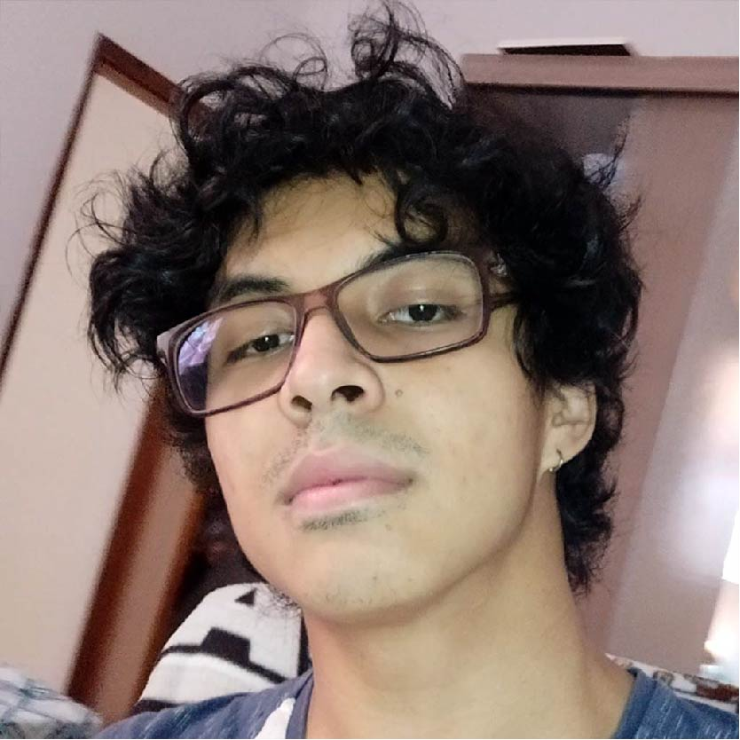

Gustavo Takahashi
Software Engineer
Contato
- +55 11 99999-1111
- email@gmail.com
- www.site.com
- daiokami
Skills
HTML, CSS Git & Github
Photoshop, Indesign & Illustrator
Figma, UX/UI & prototipação
Gustavo Takahashi
Software Engineer
Contato
Skills
HTML, CSS Git & Github
Photoshop, Indesign & Illustrator
Figma, UX/UI & prototipação
4 anos de experiência com design gráfico,design visual, 3D e design de produto trabalhando em agências de publicidade e freelancing. Possuo formação de UX/UI e prototipação e modelagem 3D.
Atualmente estudando programação e webdesign.
Universidade Paulista | de 2017 até 2019
Design digital, identidade visual, diagramação interface de usuário, wireframe, impressão gráfica, motion design, modelagem 3d, html e css.
DP Content | de 2019 até 2021
Descomunique | de 2018 até 2018
Comunidade Comunicação | de 2017 até 2018